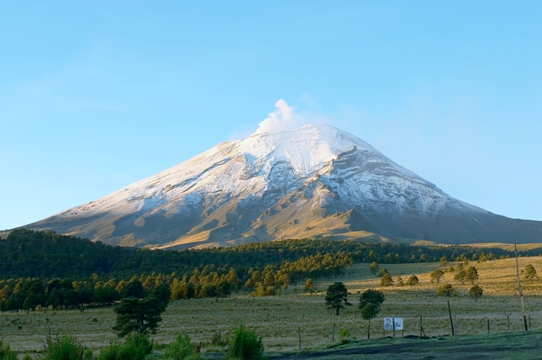

Popocatepetl
Popocatepetl, Å¡pan. Popocatépetl (z jazyka nahuatl - Dymiaca hora), skrátene aj El Popo je aktÃvna sopka a zároveÅ druhý najvyÅ¡Å¡Ã vrch Mexika. TýÄi sa do výšky 5 426 m n. m., jej vrchol je pokrytý trvalým ľadom a pri priaznivých poveternostných podmienkach je pozorovateľná aj z hlavného mesta Mexiko, od ktorého je vzdialená 70 km juhovýchodne. Na úpätà sa nachádza niekoľko kláštorov zo 16. storoÄia, ktoré sú zaradené do zoznamu svetového kultúrneho dediÄstva.
